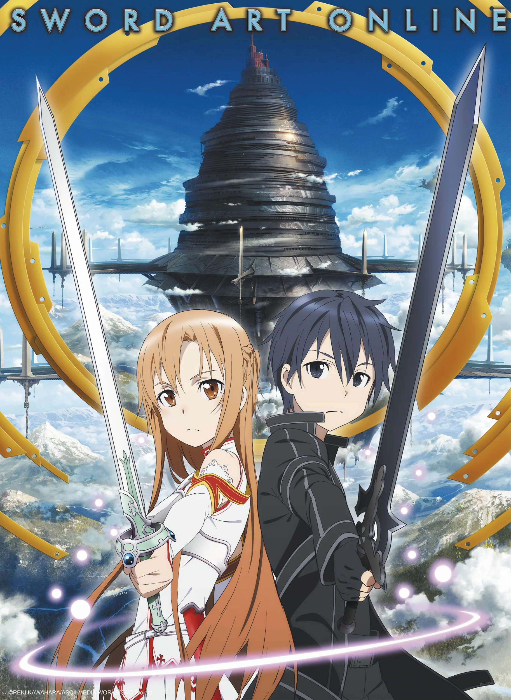

Kirito
Kazuto Kirigaya, conocido en el juego como Kirito, fue uno de los probadores de la versión beta. Prefiere jugar en solitario y acaba convirtiéndose en uno de los jugadores más fuertes de Aincrad gracias a su habilidad con dos espadas.


El anime isekai que convirtió un videojuego en una cuestión de vida o muerte.
Sword Art Online está ambientado en un futuro cercano, en el que se lanza un videojuego de realidad virtual que permite a los jugadores entrar en el juego con su mente gracias a un casco llamado NerveGear.
El día del lanzamiento, miles de jugadores descubren que no pueden desconectarse. La única forma de salir es completar los 100 pisos del castillo flotante de Aincrad, y si mueren dentro del juego, mueren también en la vida real.
La historia sigue a Kirito y Asuna mientras luchan por sobrevivir y liberar a todos los jugadores atrapados.
Kazuto Kirigaya, conocido en el juego como Kirito, fue uno de los probadores de la versión beta. Prefiere jugar en solitario y acaba convirtiéndose en uno de los jugadores más fuertes de Aincrad gracias a su habilidad con dos espadas.
Asuna Yuuki es una espadachina rápida y decidida, subcomandante de uno de los gremios más poderosos del juego. Su relación con Kirito es uno de los pilares de la historia.